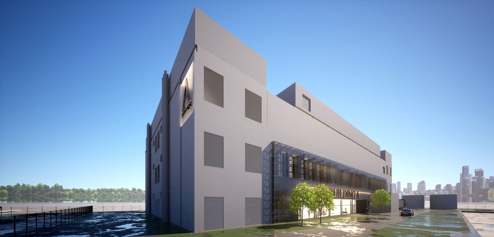

Centrum danych przy ulicy Energetycznej w Piasecznie
Komplet danych o inwestycji: zużycie wody, oddziaływanie akustyczne, przebieg procedury środowiskowej i harmonogram prac.
Zapraszamy mieszkańców Józefosławia, Julianowa i Piaseczna
Spotkanie poprzedzi prezentacja projektu, a jego zasadniczą częścią będzie sesja pytań i odpowiedzi bez ograniczenia czasu. Wezmą w nim udział przedstawiciele inwestora, zespół projektowy oraz niezależni eksperci z zakresu gospodarki wodnej, systemów chłodzenia i akustyki. O terminie inwestor poinformuje przez stronę sienreal.pl oraz Urząd Gminy Piaseczno.
Co powstaje w Piasecznie
Centrum przetwarzania danych przy ulicy Energetycznej, realizowane w czterech etapach na terenie po dawnym kombinacie UNITRA-Polkolor.
Skala adekwatna do miejsca
Obiekt nie jest przedsięwzięciem wielkoskalowym w rozumieniu, w jakim to określenie bywa używane w dyskusji o centrach danych. Ani architektura, ani skala nie odbiegają od zabudowy usługowo-przemysłowej, która od dekad dominuje w tej części Piaseczna. Porównania do megaprojektów z innych kontynentów nie oddają rzeczywistego charakteru inwestycji, która w pełni podlega polskim i unijnym normom środowiskowym.
Kto realizuje inwestycję
Za realizacją stoi Sien Real — spółka należąca w 100% do Grupy Budimex, obecnej na polskim rynku budowlanym i infrastrukturalnym od 1968 roku. Zaangażowanie kapitałowe i wizerunkowe oznacza pełną odpowiedzialność za sposób prowadzenia budowy i standard obiektu, niezależnie od tego, kto zostanie jego docelowym operatorem.
Cztery budynki i infrastruktura
Docelowo powstaną cztery budynki centrum przetwarzania danych wraz z infrastrukturą techniczną, energetyczną i drogową — w tym stacja transformatorowa, systemy awaryjnego zasilania oraz infrastruktura chłodzenia i transmisji danych. Trwające prace przygotowawcze obejmują ogrodzenie i monitoring terenu, przyłącza sanitarne, tymczasowe zasilanie, drogi technologiczne, parkingi i zaplecze budowy.
Dlaczego akurat ten teren
W dawnym kombinacie UNITRA-Polkolor w produkcji kineskopów wykorzystywano ciężkie pierwiastki i substancje toksyczne. Dlatego miejscowy plan zagospodarowania przestrzennego od kilkudziesięciu lat konsekwentnie przeznacza ten obszar wyłącznie pod funkcje usługowe i przemysłowe — teren ten nie powinien służyć zabudowie mieszkaniowej. Pozostała po kombinacie infrastruktura energetyczna pozwala korzystać z istniejących przyłączy, zamiast budować nowe linie przesyłowe przez tereny zabudowane.
Jawne postępowanie środowiskowe
Obowiązek przeprowadzenia pełnej oceny oddziaływania na środowisko nałożył Burmistrz Piaseczna. Formalny udział społeczeństwa zapewniono dwukrotnie — w kwietniu 2023 i styczniu 2024 roku — a obwieszczenia publikowano w Biuletynie Informacji Publicznej, w urzędzie, w miejscu inwestycji i w prasie lokalnej. Decyzja środowiskowa zapadła 12 kwietnia 2024 roku, przy udziale trzech instytucji opiniujących. Po rozpoczęciu prac przygotowawczych mieszkańcy najbliższych posesji otrzymali zawiadomienia listowne.
BREEAM i LEED, czyli audyt zewnętrzny
Zarówno na etapie budowy, jak i eksploatacji stosowane są rozwiązania zgodne z wymaganiami międzynarodowych certyfikacji środowiskowych BREEAM oraz LEED. Nakładają one obowiązki wykraczające poza przepisy krajowe — dotyczące gospodarowania zasobami, ograniczania uciążliwości dla sąsiedztwa i ochrony jakości życia mieszkańców. Sposób prowadzenia budowy i eksploatacji podlega audytowi zewnętrznemu.
Stały kontakt z gminą
We wszelkich sprawach dotyczących powstania centrum inwestor pozostaje w kontakcie z Burmistrzem, Sołtysem oraz organami administracyjnymi gminy — tak, by na bieżąco adresować pojawiające się pytania lokalnej społeczności. Otoczenie inwestycji ma charakter przemysłowo-usługowy i znajduje się w obszarze bezpośredniego oddziaływania akustycznego Lotniska Chopina.
Czego dziś nie podajemy
Na obecnym etapie nie są ujawniane informacje o docelowym użytkowniku i operatorze obiektu, ponieważ inwestora wiążą ustalenia z partnerem biznesowym. Z tego samego powodu nie są dziś podawane moc IT ani łączna powierzchnia techniczna. Mówimy o tym wprost, zamiast pomijać pytanie.
Karta inwestycji
Etapy realizacji
Od decyzji środowiskowej, przez prace przygotowawcze na terenie, aż po docelową budowę kampusu czterech budynków.
Decyzja środowiskowa
Decyzja o środowiskowych uwarunkowaniach po pełnej ocenie oddziaływania na środowisko, z udziałem RDOŚ, Wód Polskich i inspekcji sanitarnej.
Podpisanie umowy
Umowa na realizację robót przygotowawczych dla inwestycji przy ul. Energetycznej.
Start prac na terenie
Przygotowanie terenu: ogrodzenie, monitoring, przyłącza, zasilanie tymczasowe, drogi i zaplecze.
Zakończenie prac przygotowawczych
Teren zostaje w pełni przygotowany pod dalszą realizację inwestycji.
Budowa kampusu
Docelowo cztery budynki centrum danych wraz z infrastrukturą techniczną, energetyczną i drogową.
Jak będzie wyglądał kampus
Poglądowe wizualizacje architektoniczne przedstawiają charakter i skalę planowanej zabudowy pierwszego budynku.
{kind=link}
{kind=link}
{kind=link}
Odpowiedzi na najczęstsze obawy
Wokół inwestycji narosło wiele uproszczeń. Zestawiamy je z danymi, które można sprawdzić.
Woda
Centrum danych zużyje ogromne ilości wody i zabraknie jej mieszkańcom.Skojarzenie z chłodzeniem „na pełną moc” bez ograniczeń.
Na co dzień to tyle wody, co 5–8 mieszkań — mniej więcej tyle, ile przeciętne biuro zatrudniające około 30 osób.Woda wykorzystywana jest przede wszystkim na cele socjalno-bytowe pracowników obsługujących obiekt (maksymalnie kilkudziesięciu osób), a także na cele porządkowe i nawilżanie powietrza zimą. Chłodzenie obiektu nie zużywa wody. W normalnym trybie pracy zdecydowana większość pobranej wody wraca po wykorzystaniu do kanalizacji — bezpowrotnie zużywana jest jej niewielka część.
286 m³ wody na dobę to tyle, co osiedle na kilka tysięcy mieszkańców.Ta liczba krąży w dyskusji jako prognoza codziennego zużycia.
To jednorazowe napełnienie zbiorników przeciwpożarowych, a nie codzienne zużycie.286 m³/dobę to maksymalne zapotrzebowanie uzgodnione w warunkach przyłączenia dla całej, czteroetapowej inwestycji, wynikające z wymaganego przepisami napełnienia zbiorników. Nastąpi ono najwcześniej trzy lata po zakończeniu budowy. Według informacji PWiK wartość ta odpowiada ok. 2% docelowej wydajności planowanej stacji uzdatniania wody przy ul. Energetycznej.
Przez centrum danych w Józefosławiu jeszcze bardziej spadnie ciśnienie wody.Obawa oparta na realnym, odczuwanym dziś problemie z siecią.
Spadki ciśnienia w szczycie to realny problem — istniejący niezależnie od tej inwestycji.Nie podważamy go. Kluczowe jest jednak rozróżnienie: rzeczywiste zużycie obiektu nie równa się górnej wartości zapisanej w dokumencie uzgodnieniowym. Publicznie znane wypowiedzi przedstawicieli PWiK w Piasecznie potwierdzają, że inwestycja nie wpłynie niekorzystnie na gospodarkę wodną okolicznych terenów.
Hałas
To będzie hałaśliwy gigant, jak amerykańskie kampusy centrów danych.Skojarzenie z doniesieniami medialnymi opisującymi ogromne kompleksy zza oceanu.
Skala jest adekwatna do miejsca.Ani architektura, ani skala obiektu nie odbiegają od zabudowy usługowo-przemysłowej, która od dekad dominuje w tej części Piaseczna. Inwestycja w pełni podlega polskim i unijnym normom środowiskowym, dlatego porównania do megaprojektów z innych kontynentów nie oddają jej rzeczywistego charakteru.
W nocy będzie głośno od pracujących urządzeń.Obawa o ciągłą, głośną pracę instalacji chłodniczych.
W nocy urządzenia chłodnicze pracują ze zmniejszoną wydajnością — to wymóg decyzji środowiskowej.Na granicy działki spełnione będą wszystkie obowiązujące normy hałasu, a dodatkowo zastosowane zostaną ekrany akustyczne i żaluzje. Poziom hałasu ma być porównywalny z funkcjonowaniem pobliskiego centrum handlowego. Otoczenie inwestycji ma już dziś charakter przemysłowo-usługowy i sąsiaduje z rozdzielnią energetyczną przy ul. Energetycznej — nowy obiekt nie wprowadzi więc do tej przestrzeni obcej dotąd jakości akustycznej.
Zmiana z trzech na cztery kondygnacje oznacza wyższy, głośniejszy budynek.Skojarzenie zmiany liczby pięter ze zwiększeniem skali obiektu.
Wysokość budynku się nie zmienia.Zmiana dotyczy wyłącznie podziału wnętrza budynku na kondygnacje, nie jego finalnej wysokości, i nie ma wpływu na oddziaływanie akustyczne. Obowiązek dotrzymania norm na granicy działki obowiązuje niezależnie od ostatecznych parametrów budynków.
Procedura i standardy
Ta inwestycja powstaje bez nadzoru i w tajemnicy przed mieszkańcami.Wrażenie, że o budowie dowiedziano się dopiero, gdy na terenie stanęło ogrodzenie.
Postępowanie środowiskowe prowadzono jawnie, z udziałem trzech instytucji.Obowiązek pełnej oceny oddziaływania na środowisko nałożył Burmistrz Piaseczna. Formalny udział społeczeństwa zapewniono dwukrotnie — w kwietniu 2023 i styczniu 2024 r. — a obwieszczenia publikowano w BIP, w urzędzie, na terenie inwestycji i w prasie lokalnej. Decyzję środowiskową wydano 12 kwietnia 2024 r., z udziałem RDOŚ, Wód Polskich i Państwowej Inspekcji Sanitarnej. Inwestor przyznaje jednocześnie, że sama procedura nie zastąpiła rozmowy z sąsiadami.
„Standard środowiskowy” to tylko marketingowe hasło.Wątpliwość, czy deklaracje o ekologii obiektu mają realne pokrycie.
Budowa i eksploatacja podlegają zewnętrznemu audytowi certyfikacji BREEAM i LEED.To międzynarodowe standardy nakładające obowiązki wykraczające poza przepisy krajowe — dotyczące gospodarowania zasobami, ograniczania uciążliwości dla sąsiedztwa i ochrony jakości życia mieszkańców — oceniane przez podmiot zewnętrzny, a nie przez samego inwestora.
Otoczenie i infrastruktura
Ta budowa zniszczy charakter okolicy i obniży wartość naszych domów.Obawa, że nowoczesny obiekt przemysłowy nie pasuje do sąsiedztwa.
Przemysłowa historia terenu wyklucza tu inne przeznaczenie.W dawnym kombinacie UNITRA-Polkolor w produkcji kineskopów wykorzystywano ciężkie pierwiastki i substancje toksyczne. Dlatego miejscowy plan zagospodarowania przestrzennego od kilkudziesięciu lat konsekwentnie przeznacza ten obszar wyłącznie pod funkcje usługowe i przemysłowe — nie powinien on służyć zabudowie mieszkaniowej. Cała okolica leży również w obszarze oddziaływania akustycznego Lotniska Chopina.
Budowa i eksploatacja oznaczają stały ruch ciężarówek i utrudnienia.Obawa o wzmożony ruch drogowy w okolicy.
Docelowy ruch to głównie samochody osobowe pracowników.Ruch drogowy w okolicy nie wzrośnie w istotny sposób względem stanu obecnego. Na etapie budowy wymogi certyfikacji BREEAM i LEED zobowiązują inwestora do ograniczania oddziaływania prac na otoczenie.
Centrum danych „zabiera” prąd mieszkańcom.Obawa o dostępność energii w okolicy.
Obiekt ma dedykowaną infrastrukturę zasilania.Projekt przewiduje własną stację transformatorową oraz systemy awaryjnego zasilania, wpięte w sieć zgodnie z warunkami przyłączeniowymi. Dzięki infrastrukturze pozostałej po dawnym kombinacie obiekt korzysta z istniejących przyłączy, zamiast wymuszać budowę nowych linii przesyłowych przez tereny zabudowane.
Branża centrów danych
To „puste” budynki bez miejsc pracy.Wrażenie, że centrum danych obsługuje się „samo”.
Sektor to cały łańcuch wartości, nie tylko serwerownia.Inwestycja generuje pracę na etapie budowy (wykonawcy, poddostawcy) i eksploatacji (utrzymanie ruchu, ochrona). Polskie Stowarzyszenie Centrów Danych (PLDCA) zrzesza ponad 60 firm z całego łańcucha wartości branży, a wg jego danych sektor wygenerował w Polsce w 2025 r. 10,6 mld zł wartości dodanej i 4,3 mld zł wpływów fiskalnych.
Polska jest już „zalana” centrami danych.Wrażenie masowej, niekontrolowanej ekspansji sektora.
To wciąż rynek na dorobku.Według PLDCA Polska dysponuje ok. 200 MW mocy centrów danych, podczas gdy cała Europa to już ok. 10 GW — a ok. 80% polskich obiektów skupionych jest w rejonie Warszawy.
Dane o inwestycji: komunikat prasowy i materiały inwestora (Sien Real) dotyczące gospodarki wodnej, akustyki i procedury środowiskowej. Dane sektorowe: Polskie Stowarzyszenie Centrów Danych (PLDCA, pldca.pl) oraz raport Komisji Europejskiej „Assessment of the Energy Performance and Sustainability of Data Centres in the EU”.
Najczęściej zadawane pytania
Odpowiedzi na pytania, które najczęściej pojawiają się w związku z inwestycją.
Co dokładnie powstanie w Piasecznie? +
Docelowo kampus czterech budynków centrum przetwarzania danych wraz z infrastrukturą techniczną, energetyczną i drogową — w tym stacją transformatorową oraz systemami awaryjnego zasilania. Inwestycja realizowana jest w czterech etapach.
Kto jest inwestorem? +
Inwestorem jest Sien Real Sp. z o.o. — spółka należąca w 100% do Grupy Budimex, obecnej na polskim rynku budowlanym i infrastrukturalnym od 1968 roku. Zaangażowanie kapitałowe i wizerunkowe oznacza, że inwestor pozostaje w pełni odpowiedzialny za sposób prowadzenia budowy i standard obiektu, niezależnie od tego, kto zostanie jego docelowym operatorem.
Ile wody zużyje obiekt? +
W codziennej eksploatacji tyle, co pięć do ośmiu mieszkań — mniej więcej tyle, ile przeciętne biuro zatrudniające około 30 osób. Woda wykorzystywana jest głównie na cele socjalno-bytowe pracowników, porządkowe i nawilżanie powietrza zimą. Chłodzenie obiektu nie zużywa wody. Powtarzana w dyskusji wartość 286 m³ na dobę to maksymalne zapotrzebowanie uzgodnione dla całej czteroetapowej inwestycji, wynikające z jednorazowego napełnienia zbiorników przeciwpożarowych — nastąpi ono najwcześniej trzy lata po zakończeniu budowy.
Czy inwestycję będzie słychać? +
Na granicy działki spełnione będą wszystkie obowiązujące normy hałasu dla tego typu inwestycji i tej lokalizacji. Decyzja środowiskowa określa m.in. maksymalną liczbę urządzeń chłodniczych i ich parametry akustyczne, a w porze nocnej urządzenia pracują ze zmniejszoną wydajnością. Zastosowane zostaną ekrany akustyczne i żaluzje. Poziom hałasu ma być porównywalny z funkcjonowaniem pobliskiego centrum handlowego.
Jaki jest zakres obecnie prowadzonych prac? +
Trwające prace przygotowawcze obejmują wykonanie ogrodzenia i systemu monitoringu terenu, przyłączy sanitarnych, tymczasowego zasilania energetycznego, dróg technologicznych, parkingów oraz zaplecza budowy. Potrwają do sześciu miesięcy od dnia przekazania placu budowy.
Czy planowane jest spotkanie z mieszkańcami? +
Tak. Inwestor zaprasza mieszkańców Józefosławia, Julianowa i Piaseczna na otwarte spotkanie — poprzedzi je prezentacja projektu, a jego zasadniczą częścią będzie sesja pytań i odpowiedzi bez ograniczenia czasu. Wezmą w nim udział przedstawiciele inwestora, zespół projektowy oraz niezależni eksperci z zakresu gospodarki wodnej, systemów chłodzenia i akustyki. O terminie inwestor poinformuje przez stronę sienreal.pl oraz Urząd Gminy Piaseczno. Pytania można zadać na miejscu lub przesłać wcześniej na adres pytania@sienreal.pl.
Kto będzie operatorem obiektu i jaka będzie jego moc obliczeniowa? +
Na obecnym etapie inwestor nie może ujawnić informacji o docelowym użytkowniku i operatorze obiektu ani o mocy IT i łącznej powierzchni technicznej — wiążą go ustalenia z partnerem biznesowym.
Skąd pochodzą informacje przedstawione na tej stronie? +
Treści oparte są na komunikacie prasowym i materiałach inwestycyjnych dotyczących centrum danych przy ul. Energetycznej w Piasecznie, publikowanych przez inwestora — Sien Real Sp. z o.o. Aktualne informacje o projekcie dostępne są na stronie sienreal.pl.
Masz pytania dotyczące inwestycji?
Poniżej kierunki kontaktu w zależności od charakteru pytania. Powtarzające się pytania inwestor publikuje na stronie sienreal.pl.
Pytania dotyczące harmonogramu prac, organizacji ruchu i wpływu inwestycji na najbliższe otoczenie.
pytania@sienreal.pl →Zapytania prasowe dotyczące inwestycji kierowane do inwestora — Sien Real Sp. z o.o.
pytania@sienreal.pl →Pytania o współpracę i kolejne etapy realizacji inwestycji.
pytania@sienreal.pl →Kontakt e-mail: pytania@sienreal.pl